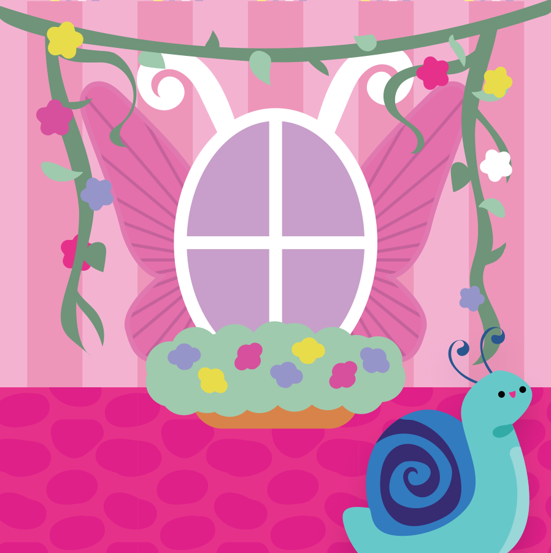
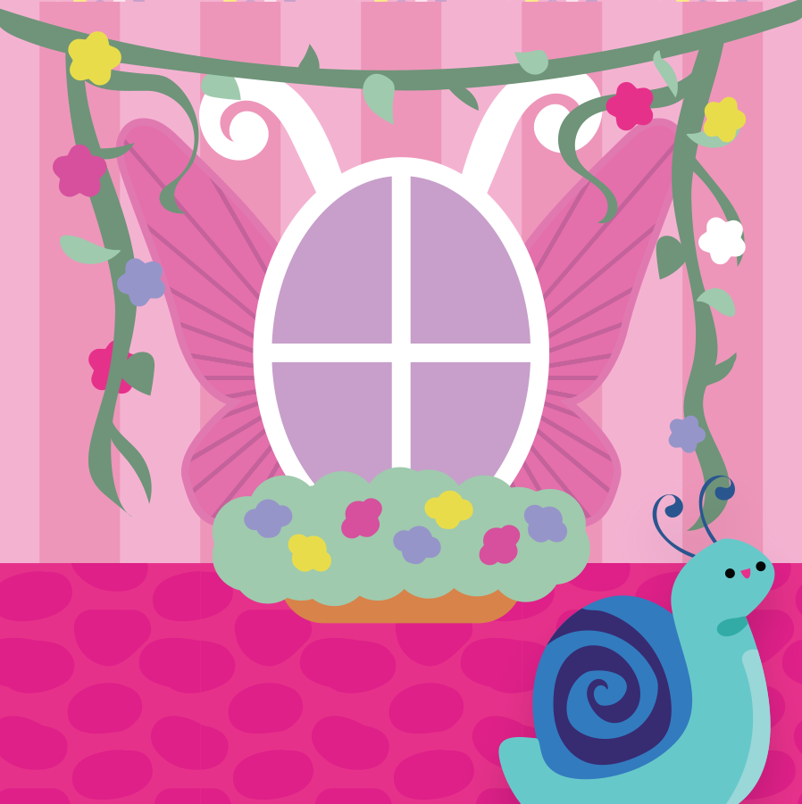
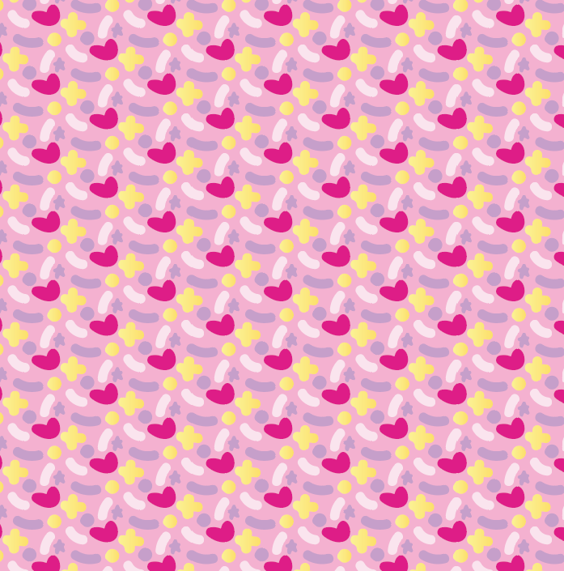
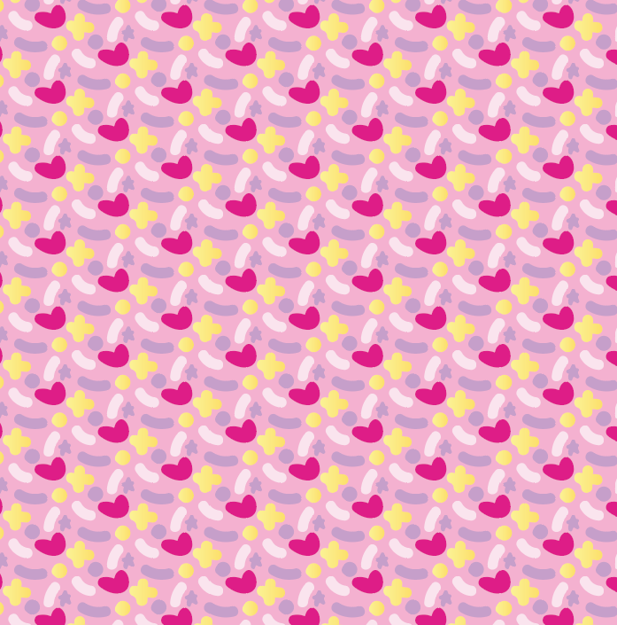

Fairy Fizzies...
A magical candy...
I was challenged to create a brand new type of candy not bound to the laws of reality. Thus, Fairy Fizzies was born.

 

I based my design off of a carton shape much like a milk carton or whoppers carton. I knew early on I wanted the design to feature some sort of building or house. I also wanted to use a color palette that would appeal to young girls and be saturated enough to stand out on the shelf.
The candies I used to act as filler were generic konpeito: small Japanese sugar candies. They aren't seen in the west very often so it was a perfect “dummy product” for staging photos.